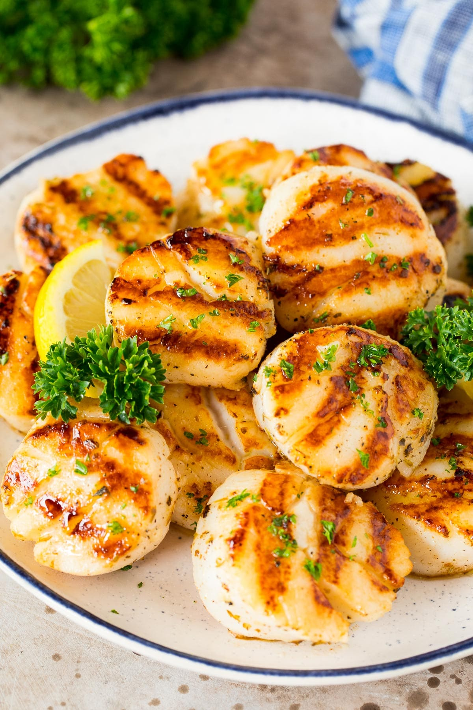

Grilled Scallops

DESCRIPTION
These grilled scallops are simple, quick, and delicious. The only tools you need are a grill and a grilling basket.
INGREDIENTS
- ¾ cup butter
- ⅔ cup chopped onions
- 3 cloves garlic, chopped
- ¼ cup fresh lemon juice
- 1 pinch salt
- 1 ½ pounds sea scallops
- ⅓ cup chopped fresh parsley
DIRECTIONS
- Preheat an outdoor grill for medium heat and lightly oil grate.
- Melt butter in a saucepan over medium heat. Cook onion and garlic until soft and translucent, about 5 minutes. Remove from heat, and stir in lemon juice and salt. Place scallops in a large bowl, and toss with butter mixture; let stand for about 2 minutes.
- Thread scallops onto skewers, or use a wire grill basket. Cook on preheated grill until scallops turn opaque, turning once, about 4 to 5 minutes.
- Return butter mixture to saucepan, and bring to a boil. Reduce heat to low, and keep warm while scallops cook. Toss or brush over grilled scallops and serve.